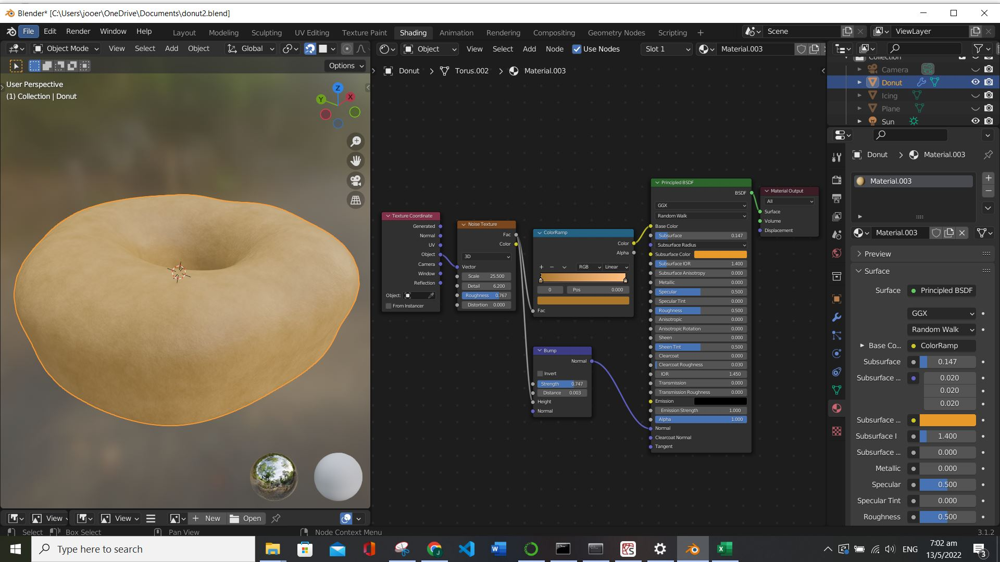
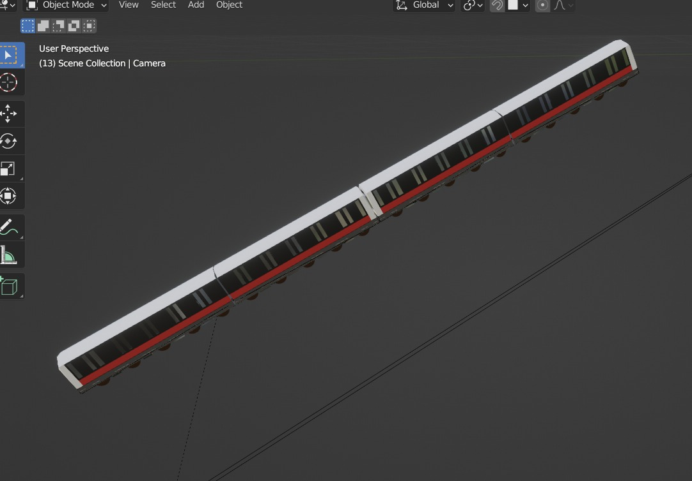
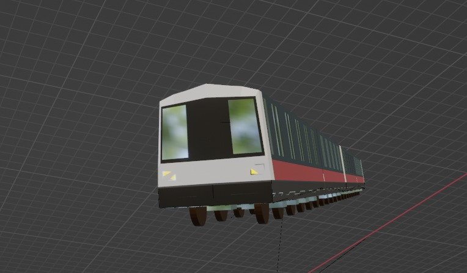
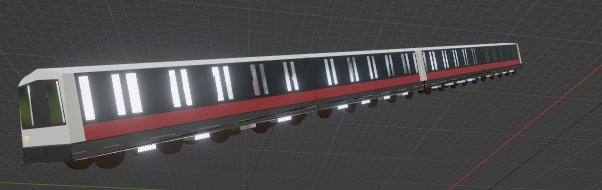
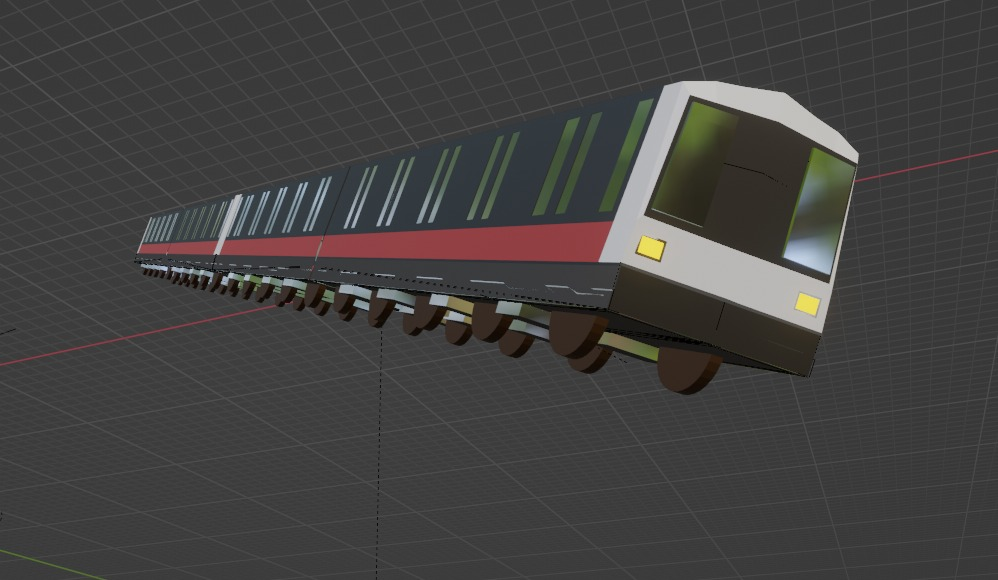
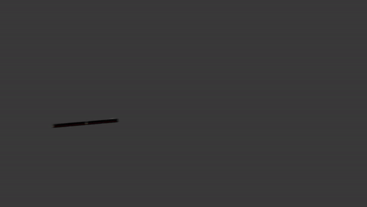

Experiments and commissioned work done with Blender
Interacting with architects frequently during my undergrad days made me realize that I liked pretty renders. Coupled with a few prompts from friends in startups (Prominence Gaming and BiFrost AI) I started experimenting with Blender.
Aside from developing a sense for aesthetics, branding and chakra, I saw the importance of proceduraly generated modifications in the art space for both design revisions and concept experimentation. Most importantly, it was fun making donuts spin and interesting working with stakeholders to realize ideas/concepts.
Without further ado, welcome to my mini collection of Blender works.

This first piece is titled 'Holey Beginnings' and was my first piece of work produced by following a tutorial from Blender Guru on YouTube. The medium is pixels on webpage and the subject is a 100% organic blueberry icing, freshly fried donut with bespoke sprinkles and premium dark chocolate eggs. It took me 2 days to troubleshoot the 'icing flowing over donut' effect and it turns out the cause was a lack of subdivisions on the donut's surface for the icing to flow onto.
 Best taken with some beats.
Best taken with some beats.


The second work is a series I call 'Welcome to the Promisphere', I immediately applied what I learned from the donut to create an animated logo for my friend's startup. Several iterations were done, each tweaked based on feedback from earlier revisions. I found that with requirements and a need to incorporate feedback, the design process was infinitely more onerous and challenging. The first work in the series was submitted before any prompts were given, hence the difference in flavor.
This third work was made for Toa Payoh Chinese Methodist Church as promotional material for an upcoming anniversary celebration. Getting chinese words into Blender was a bit harder than expected, but I felt that I nailed chinese church vibes with this piece.
    A final parting gift for SMRT before I leave. A train model in the .gltf format so that it can be used as part of a train position mapping software.